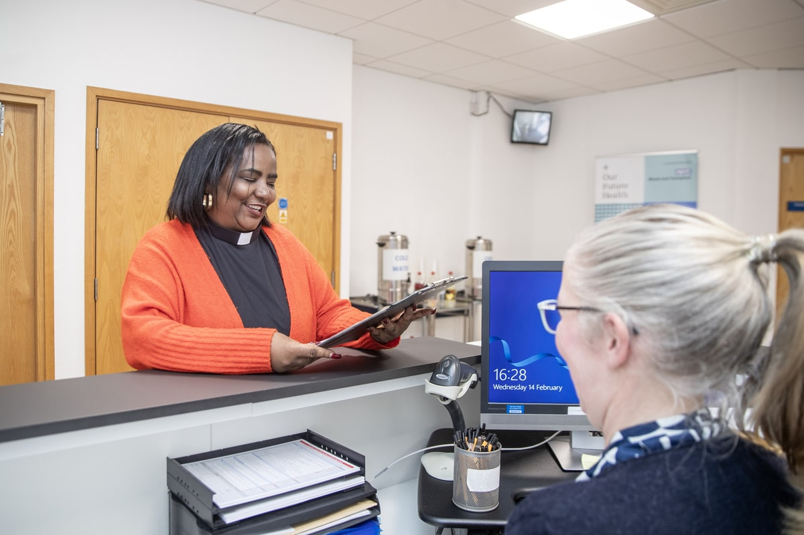
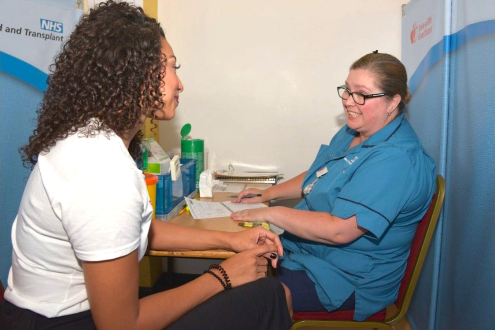
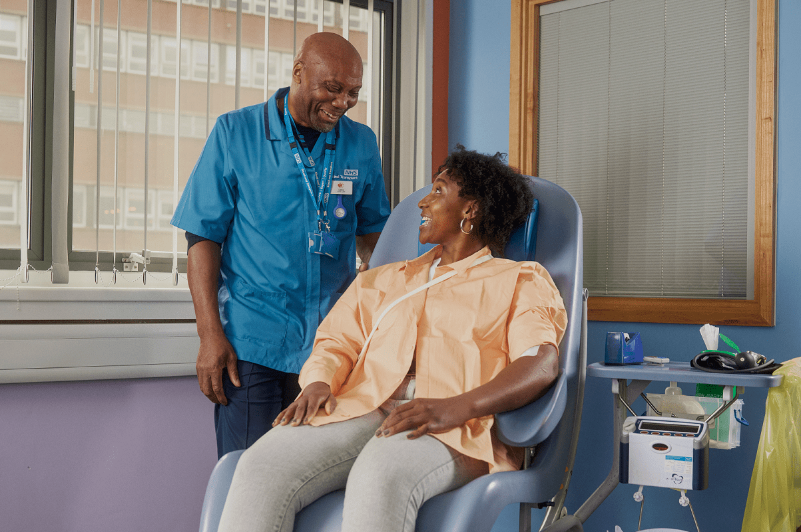
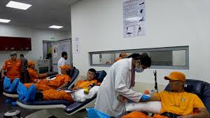
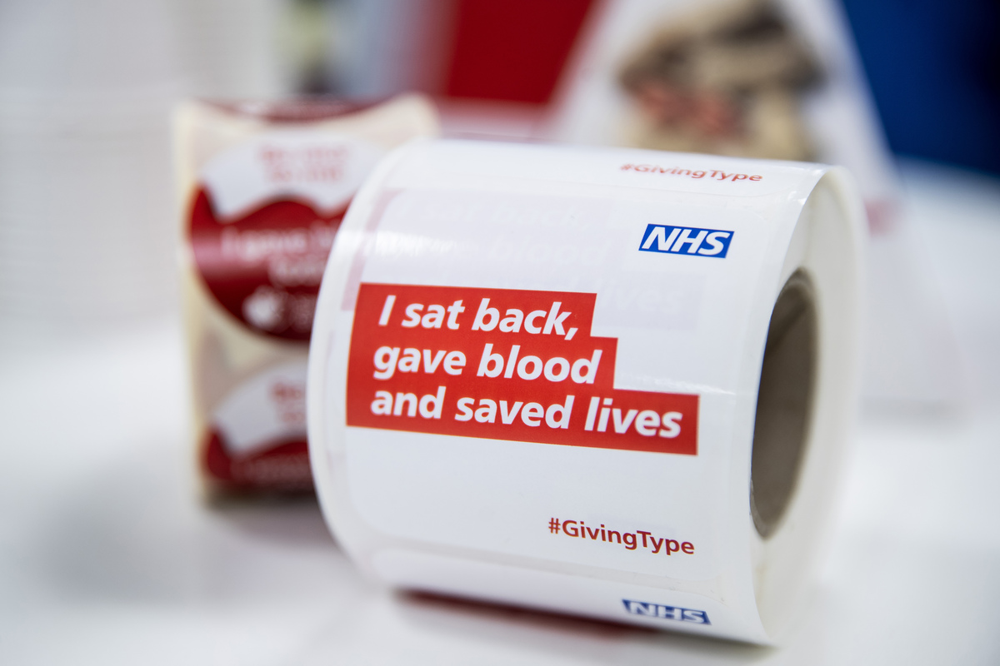

When you arrive at your appointment, complete a health check questionnaire and drink 500ml of water.

Have a private health screening with a friendly member of the team.

Take a seat and give blood for 5-10 minutes.

Enjoy a free drink and snack while you rest for 15 minutes.

You're all done. Your donation will help save up to 3 lives.
